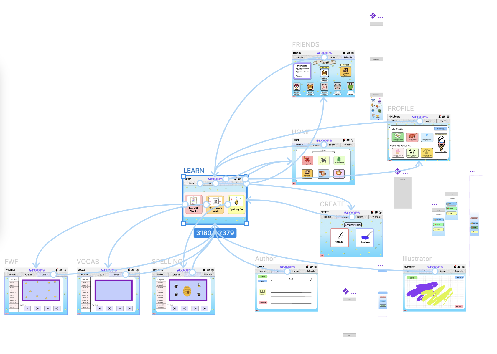
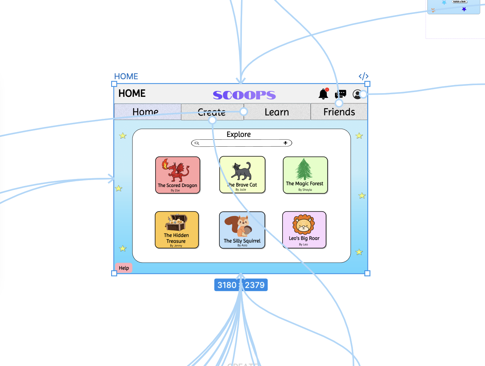
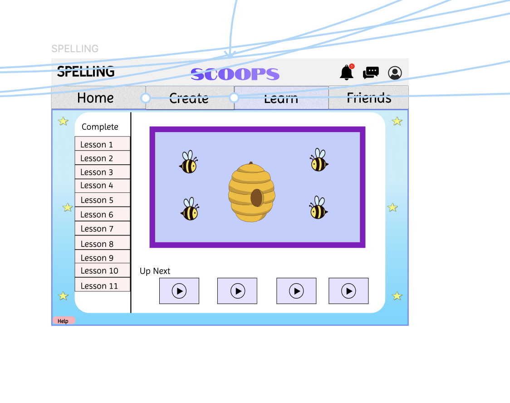
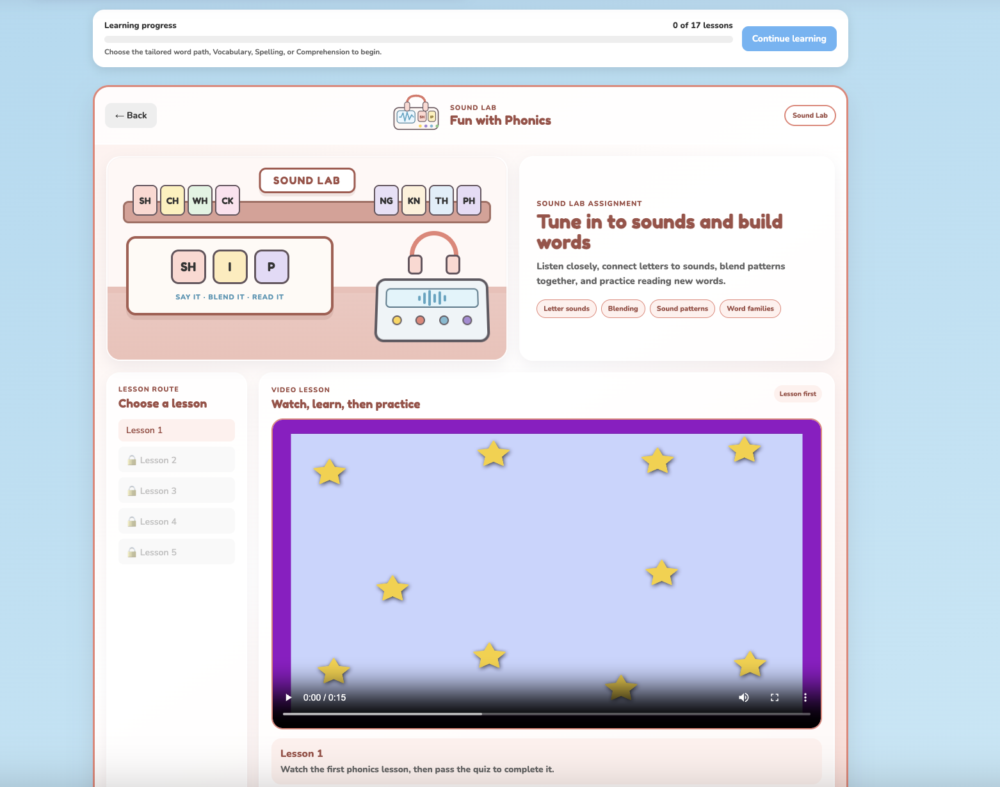
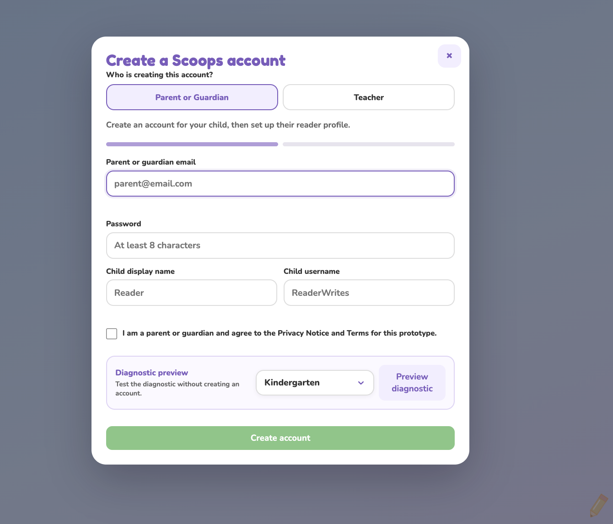
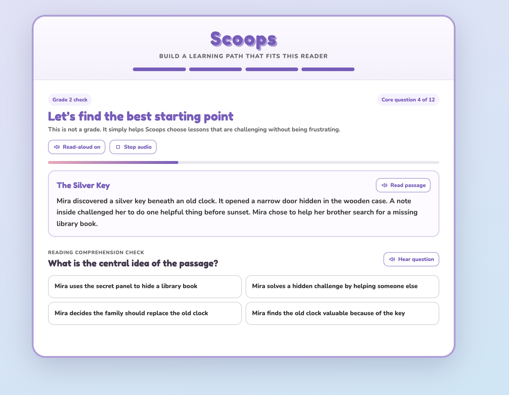
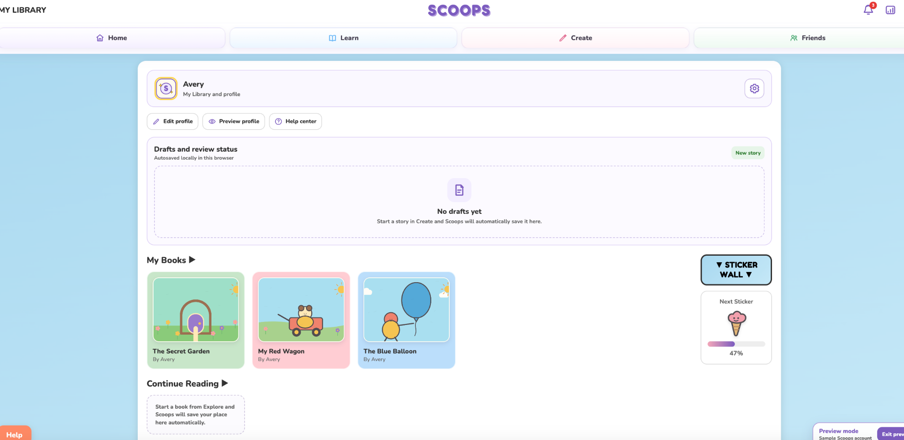

01 · Product Design Case Study
Scoops
A children’s literacy and creative-expression platform designed to make reading more interactive, personal, and imaginative.
- ROLE
- Product Designer
- CONTEXT
- University capstone + ongoing product
- FOCUS
- UX/UI, interaction, systems
- TOOLS
- Figma, HTML, CSS, JavaScript


The design challenge
Scoops began as my New Media capstone at the University of Tampa, but the design problem quickly became bigger than a single school project: how could one product connect reading, learning, and creative expression without making the experience feel fragmented or overly academic?
I wanted a child to be able to discover a story, practice a skill, create something of their own, and come back later without having to relearn the interface each time. At the same time, parents, guardians, and teachers need a different level of visibility and control.
For young readers: make the main actions obvious, keep navigation predictable, use approachable language, and create enough personality that learning still feels inviting.
For adults: surface setup, progress, and oversight without turning the child-facing product into a dashboard-heavy experience.
From map to product
I started by mapping the product in Figma, then used implementation itself as another round of prototyping.
The early prototype established the core destinations—Home, Learn, Create, Friends, profile, and lesson paths—and helped me see how many different routes the product needed to support. Once I began turning those flows into a working front end, questions that were easy to overlook in a static prototype became much more concrete: What happens when a library is empty? Where does progress live? How should an adult enter the product? What should happen before a child begins a learning path?




I intentionally show both versions. The earlier screens document the structure I was exploring; the current product shows how that thinking changed once I had to make the experience work as a system.
Designing one system for different users
Scoops cannot treat every user as if they need the same interface. The child-facing experience centers four predictable destinations—Home, Learn, Create, and Friends—while account setup, diagnostics, progress, and oversight sit in supporting flows for adults and readers.
As the product grew, I became more deliberate about separating roles instead of forcing everyone through one generic experience. Parent or guardian and teacher entry points are distinct, and the diagnostic creates a clearer bridge between setup and a reader’s learning path.
Clarity: consistent navigation, large targets, plain labels, visible progress, and read-aloud controls reduce the amount a young user has to infer.
Consistency: color, typography, card structure, and interaction patterns repeat across reading, learning, creation, and account experiences so each new area still feels like Scoops.


What changed when I built it
Moving from Figma into HTML, CSS, and JavaScript changed the way I evaluated the design.
A polished screen can hide unanswered questions. A working product cannot. Building Scoops pushed me to think about states such as drafts, empty libraries, progress, preview behavior, account roles, and the handoff between a diagnostic and a learning path. It also made reusable interface patterns more important: every new feature had to fit the same navigation and visual system rather than becoming a one-off screen.

See Scoops in context.
The case study shows how the product evolved. The live preview lets you move through the current experience and see how the pieces work together.
What I learned
The biggest lesson from Scoops is that product design did not end when the Figma prototype looked finished.
Building the product made me more aware of the relationship between visual design, interaction logic, content states, and technical constraints. I had to think less in terms of isolated screens and more in terms of a system that could keep expanding without becoming confusing.
Next: I would continue building out the teacher experience and run structured usability sessions with children, parents or guardians, and educators. I would specifically validate navigation, the diagnostic-to-learning transition, story creation, and whether progress information feels useful without becoming overwhelming.